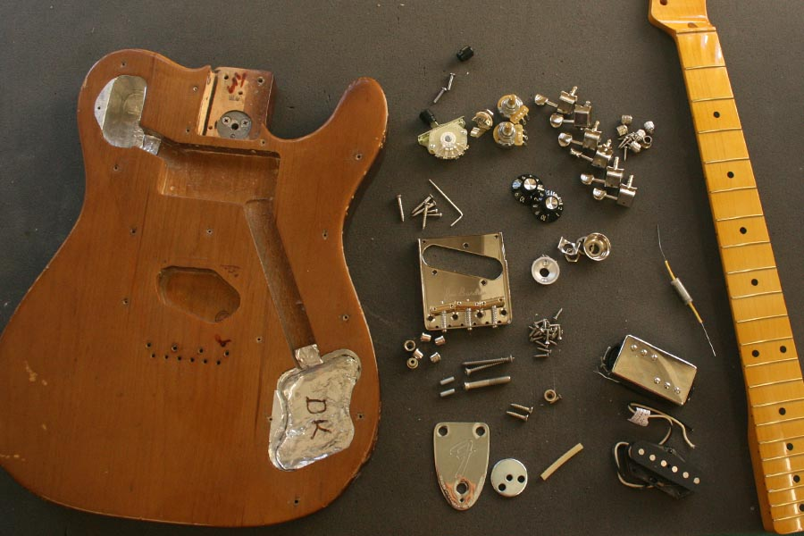
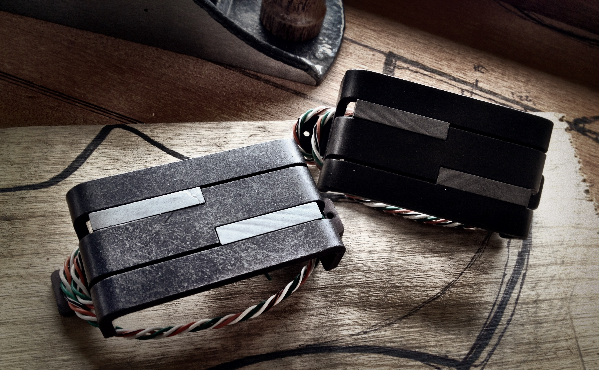
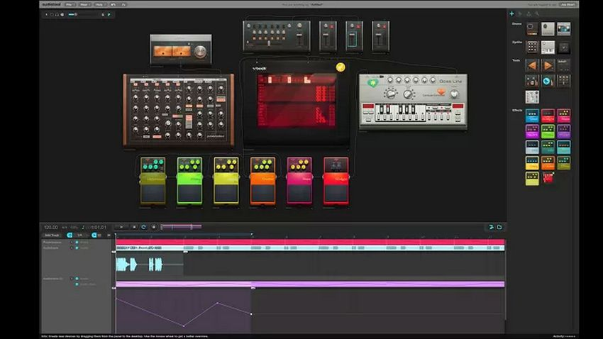

News

-
Partscaster 1
11/14/2017
 - Just announcing my official start of building my own Partscaster(Even though I've technically started a couple months back). Most of the parts are purchased, and now I'm in the long process of making sure they go together. In addition, I'm gonna do a little paint job on the pickguard/backplate using gold leafs, so I'll update on that as well. I'm not expecting much, and in fact I think failure is likely to happen. So that's why I'm dubbing this guitar the Crap'o'caster. We'll how this goes :)
-
Alumitones
11/13/2017
 - Back around January, I took a plunge and purchased some Lace ALumitone pickups. Specifically, a Deathbucker for the bridge and Griller for the neck. I didn't know what I was expecting at the time. These pickups create quite a buzz on the Internet. If anything, users are quite polarized on how they sound. While some say they are clear and transparent, others say they are sterile and shrill. After playing for some time now, I can understand why they are quite polarizing. Upfront, I'm going to say i like them. They are definately a keeper. Now, whould I recommend them? That's the million dollar question. While I would like to have a set around, they probably wouldn't be my go to for a main guitar. They are very unconventional interms of sound, and while they may work well in certain situations (Cleans, transparent tones, jazz), they aren't exactly suitable for what traditional wound pickups can do. And for that reason, I think it's better to consider them as an extra tool in your arsenal, rather than the be-all-end-all of pickups.
-
Quick Jingle From Audiotool
11/12/2017
 -
A few years back I came across a free web app called Audiotool (Link in the Navigation section). It's a neat little tool make EDM msuic stuff.
While not really my fortay, it's still fun to mess around and learn. You kinda appreciate the work needed to organize and create good Electronic music.
Anyway, I just recently came back to the app, and it's still kicking. I spent a couple hours just messing around and relearning things, and came up with this stupid jingle:
Give the app a shot, considering it's free, you really have nothing to loose!
-
First Post
11/12/2017
- This is test. Just to see if News posts works. I'll assume that it does. Anyways, welcome!!